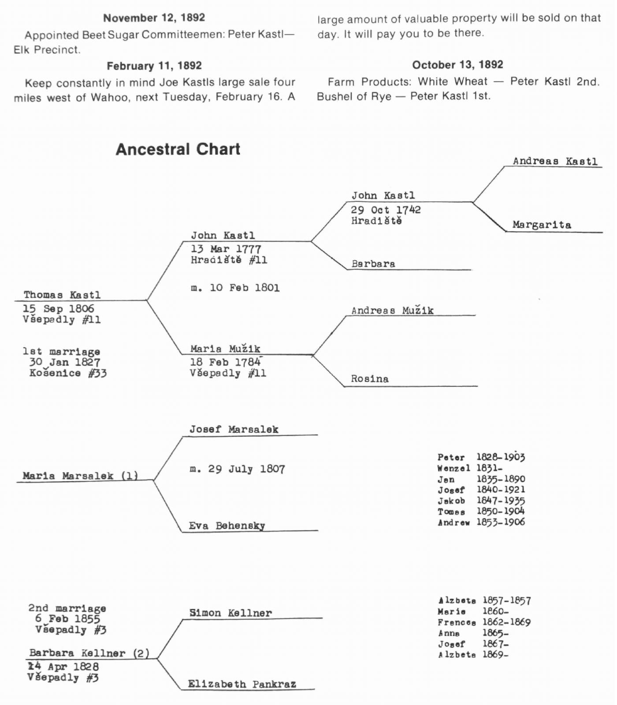
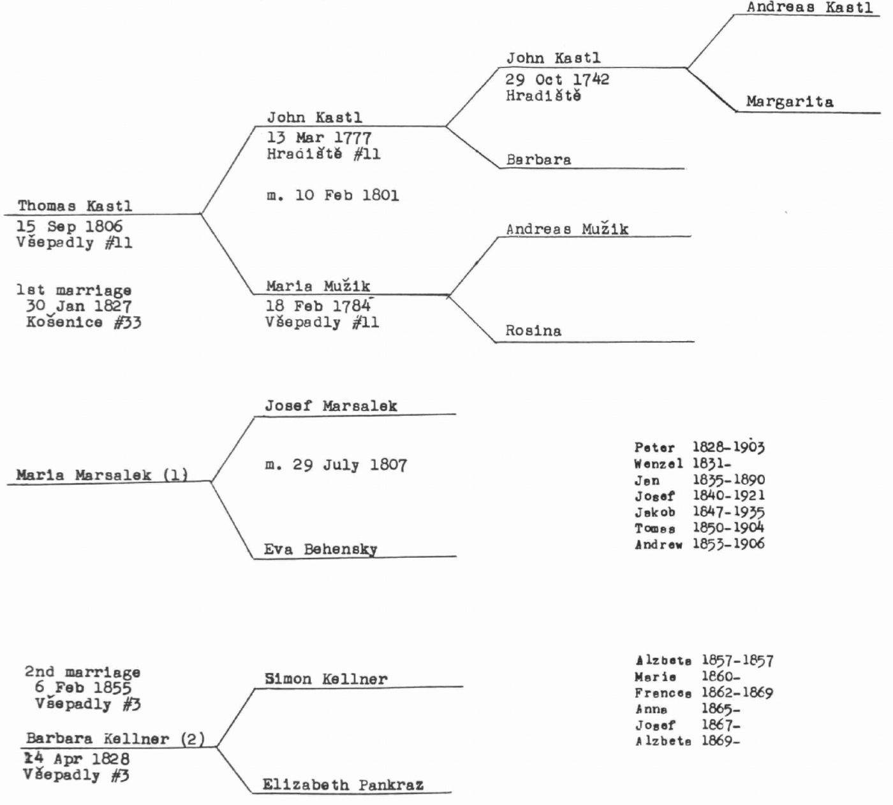

The book · Ancestral Chart
Page 14 Ancestral Chart


Transcription
November 12, 1892
Appointed Beet Sugar Committeemen: Peter Kastl—Elk Precinct.
February 11, 1892
Keep constantly in mind Joe Kastls large sale four miles west of Wahoo, next Tuesday, February 16. A large amount of valuable property will be sold on that day. It will pay you to be there.
October 13, 1892
Farm Products: White Wheat — Peter Kastl 2nd. Bushel of Rye — Peter Kastl 1st.
Ancestral Chart


Layout: a left-to-right pedigree (bracket) chart. Each person sits on a horizontal line; a forked line joins each person to their father (upper branch) and mother (lower branch) to the right. Thomas Kastl is at the left with his parents; below him his two wives are shown, each with her own parents. Two lists of children (with years) are printed at the right, the first beside Maria Marsalek (1), the second beside Barbara Kellner (2).
- Thomas Kastl — 15 Sep 1806, Všepadly #11
- 1st marriage 30 Jan 1827, Košenice #33
- Father: John Kastl — 13 Mar 1777, Hradiště #11
- (parents of Thomas: m. 10 Feb 1801)
- Father: John Kastl — 29 Oct 1742, Hradiště
- Father: Andreas Kastl
- Mother: Margarita
- Mother: Barbara
- Mother: Maria Mužik — 18 Feb 1784, Všepadly #11
- Father: Andreas Mužik
- Mother: Rosina
- Maria Marsalek (1) — first wife of Thomas Kastl
- Father: Josef Marsalek
- (m. 29 July 1807)
- Mother: Eva Behensky
- Children (list at right):
- Peter 1828-1903
- Wenzel 1831-
- Jan[?] 1835-1890
- Josef 1840-1921
- Jakob 1847-1935
- Tomas[?] 1850-1904
- Andrew 1853-1906
- Barbara Kellner (2) — 24[?] Apr 1828, Všepadly #3 — second wife of Thomas Kastl
- 2nd marriage 6 Feb 1855, Všepadly #3
- Father: Simon Kellner
- Mother: Elizabeth Pankraz
- Children (list at right):
- Alzbeta[?] 1857-1857
- Marie[?] 1860-
- Frances[?] 1862-1869
- Anna[?] 1865-
- Josef 1867-
- Alzbeta[?] 1869-
People from the line of descent on this page
- Andreas Kastl
- Margarita
- Wolfgang Jan Kastl b. 1742
- Barbara
- Jan Kastl b. 1777
- Maria Mužik b. 1784
- Andreas Mužik
- Rosina
- Thomas Kastl b. 1806
- Josef Marsalek
- Eva Behensky
- Barbara Kellner b. 1828
- Simon Kellner
- Elizabeth Pankraz or Alzbeta Bauer
- Alzbeta Kastl 1857–1857
- Maria Kastl b. 1860
- Frantiska Kastl 1862–1869
- Josef Kastl b. 1867
- Alzbeta Kastl b. 1869
- Andrew Kastl 1853–1906
- Jacob Kastl 1847–1935
- John Kastl 1835–1890
- Josef Kastl 1840–1921
- Peter Kastl 1827/1828–1903
- Thomas Kastl 1850–1904
- Wenzel Kastl b. 1831
Transcriber’s notes
Top: last newspaper items from the Wahoo News Era (continuing the series from p.13). No page number is visible on this scan (scan is shorter than other pages; would be p.14). The chart is typewritten in two typefaces; in the bolder face used for the two children lists, lowercase a, e and s are clogged and nearly indistinguishable, so 'Jan', 'Tomas', 'Alzbeta', 'Marie', 'Frances', 'Anna' are interpretive readings (they look like 'Jen', 'Tomes', 'Alzbete', 'Marie', 'Frences', 'Anne'). Peter's death year reads 1903 (OCR gave 1904; image shows 1903 with a stray dot over the 0). Barbara Kellner's birth day is overtyped (looks like 2 struck over 1), read as 24.